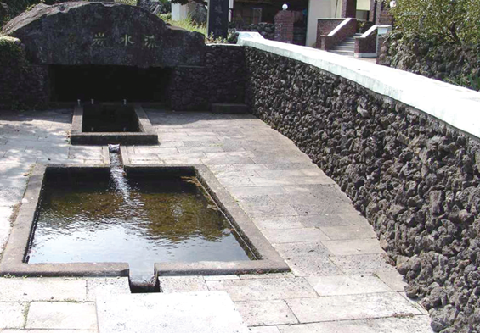
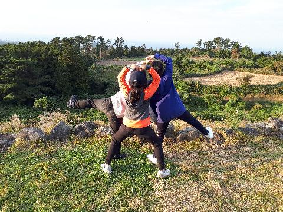
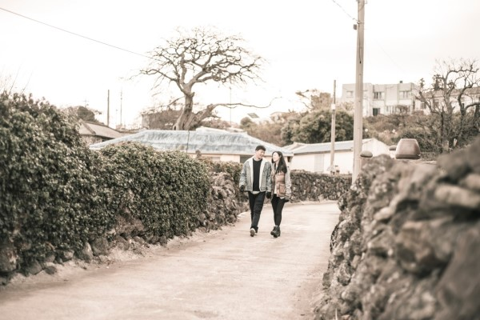

쉼터마을유수암리
#제주도 #쉼터마을
insta
map
064-799-2201
바위 속에서 물이 솟아 흐른다하여 유수암이라는 마을명칭이 생겼는데,
산 좋고, 물좋고, 공기 맑은 이곳 유수암 마을은 또한 인심도 좋다.
마을에 제주특별자치도 기념물 제6호로 등록된 무환자나무가 있고 팽나무 군락지와 고목들이 마을곳곳에 어우러져 있으며
학술적 가치가 높은 마을보호석인 오방신장이 있다.
또한 마을목장지대로 올라가면 선조들이 심어 놓은 소나무, 삼나무, 편백나무들이 하늘을 찌를 듯이 우거져 있고,
주변에 형제봉(일명 녹고뫼)오름은 정상까지 등산로 개설이 되어서 가족단위나 오름동호회에서 즐겨찾는 곳이다.
제주특별자치도 제주시 애월읍 유수암평화길 14